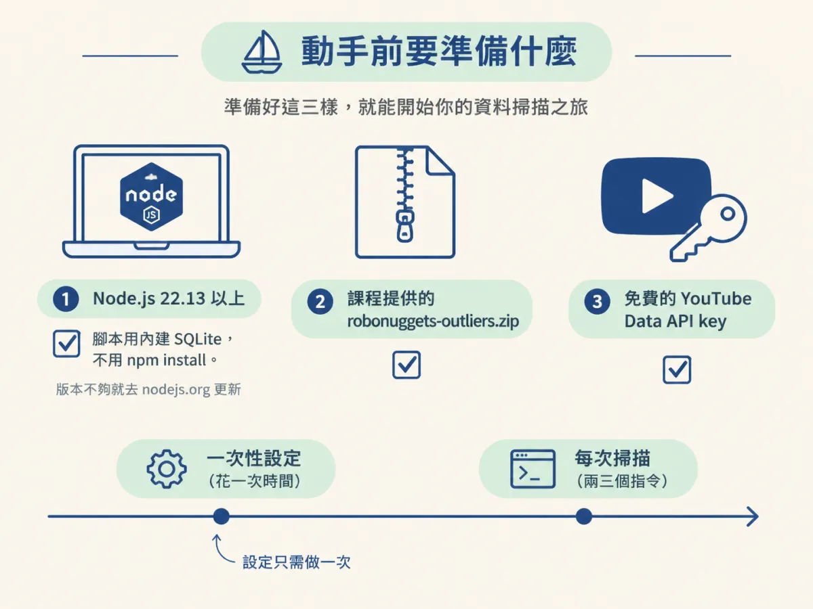
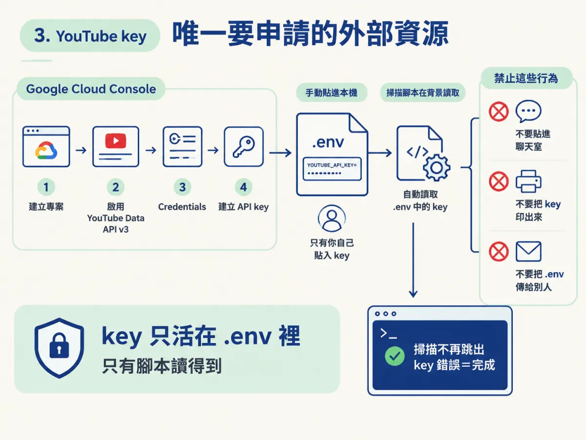
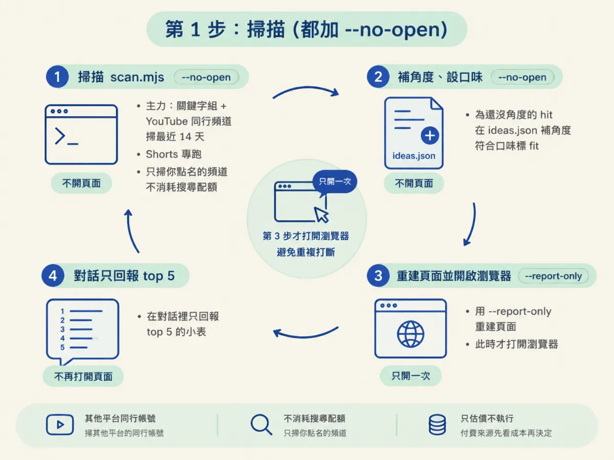
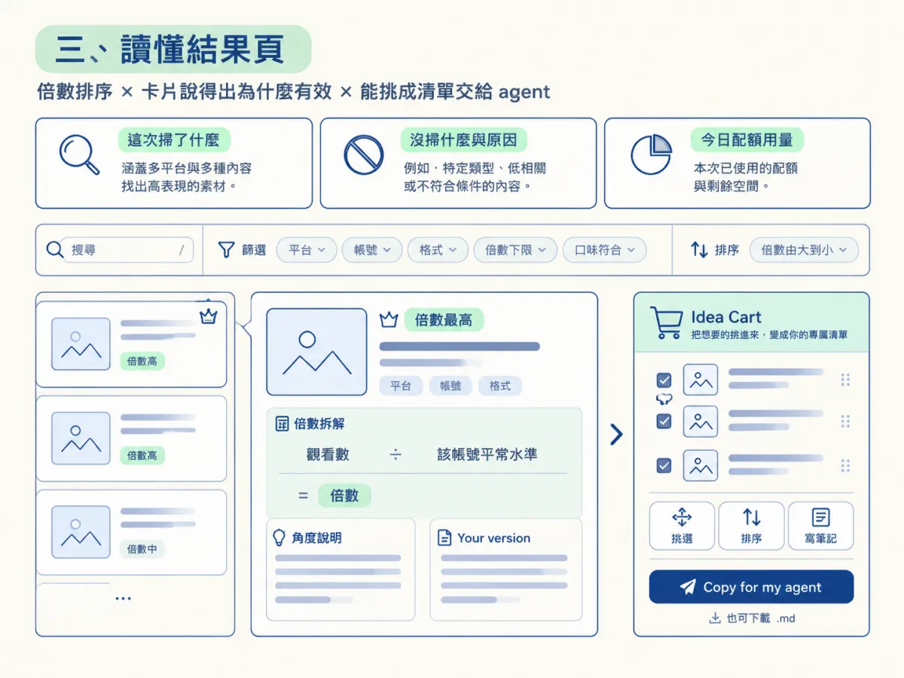

前兩步你已經知道 outlier 是打敗平常水準的貼文，也知道倍數是觀看數除以該帳號同類貼文的中位數。理論都對了，但你手上還沒有任何一張清單。這一步動手：把 /outliers 裝起來、完成一次性的設定，真的跑出你自己利基的爆款清單，並讀懂那張結果頁。
完成 /outliers 的一次性設定（YouTube API key），跑出自己利基的 outlier 清單，並能讀懂結果頁上的倍數與排序。
做完這一段，你的瀏覽器會打開一張結果頁：你這個利基的貼文依倍數排好，每張卡片有縮圖、倍數和為什麼它有效的說明。這是看得見的成果，之後挑題材就從這張頁面開始。
動手前需要三樣東西：Node.js 22.13 以上（skill 的腳本用 Node 內建的 SQLite，不需要 npm install，版本不夠就去 nodejs.org 更新）、課程提供的 robonuggets-outliers.zip，以及一個免費的 YouTube Data API key。設定只要做一次，之後每次掃描都是兩三個指令的事。

整個設定有六個檢查點，這是 SKILL.md 的清單：
Setup:
- [ ] 1 Node.js 22.13 or newer
- [ ] 2 YouTube key in .env
- [ ] 3 Niche written into scripts/keywords.json
- [ ] 4 Peers in data/peers.json (recommended)
- [ ] 5 Sources for the other platforms, if wanted
- [ ] 6 Self-test passes把 zip 的安裝提示貼給你的 agent，它會回給你設定需要的連結。這些連結只有第一次要用，之後就固定了。安裝提示長這樣：
"""I'm giving you a resource called Outliers. It's in the file robonuggets-outliers.zip (in my Downloads folder unless I say otherwise). Follow the README to set it up. Recommend how it would best apply to our setup in plain language, and ask me a few questions to clarify my intent before you install it."""
跑 node --version，輸出必須是 22.13 或更新。不是的話先更新 Node，再往下走——因為腳本用的是 Node 內建的 SQLite，舊版直接跑不起來。
若 .env 不存在或裡面沒有 YOUTUBE_API_KEY，就把 env.example 複製成 .env。這個檔案本身就是操作說明，完整內容如下：
# Copy this file to a new file named .env in the same folder (the skill folder), then paste your keys after the = signs.
# Never share your .env file and never paste a key into a chat. Only the scripts in scripts/ read it.
# REQUIRED for YouTube. Free, read-only, no sign-in needed. Get one at console.cloud.google.com
# (create a project, turn on "YouTube Data API v3", then Credentials > Create credentials > API key).
YOUTUBE_API_KEY=
# TikTok and X work with no key: TikTok through yt-dlp (free, install it once), X through FxTwitter (a free public API).
# The keys below take over if either free source stops answering.
# OPTIONAL. Needed for Instagram and LinkedIn, which have no free source. One of the first two is enough.
# Apify covers all four platforms: $5 of free usage every month, no card needed. apify.com > Settings > API & Integrations
APIFY_API_TOKEN=
# ScrapeCreators covers TikTok, Instagram and LinkedIn: 100 free credits, then about $47 for 25,000 credits that never expire. scrapecreators.com
SCRAPECREATORS_API_KEY=
# X's own API, the official paid route for X: pay per use, about $0.005 a post read, credits bought in the X Developer Console (developer.x.com).
X_BEARER_TOKEN=照註解的路徑去申請：到 console.cloud.google.com 建一個專案、開啟「YouTube Data API v3」，再到 Credentials 選 Create credentials、API key。拿到的 key 貼進 .env 的 YOUTUBE_API_KEY= 後面就好。
警告：key 只活在 .env 裡。貼 key 進去的人必須是你自己，不要把 key 貼進聊天室，也不要把 .env 傳給任何人。SKILL.md 的規則寫得很硬：永遠不要請使用者把 key 貼進對話，也永遠不要把 key 印出來。完成的判斷很簡單：掃描啟動時不再出現 key 錯誤。

至於下面那幾個選用的 key，先不用理會：TikTok 和 X 有免費來源（yt-dlp 與 FxTwitter），Instagram 和 LinkedIn 則沒有免費來源、需要付費 key（Apify 或 ScrapeCreators 擇一，Apify 一個月有 5 美元免費額度、不用信用卡）。等你確定要用這些平台再設定即可。
若 scripts/keywords.json 還留著 _niche_note（它以 EXAMPLE 開頭），代表還是範例設定。問清楚自己兩件事：你的利基是什麼、你的頻道叫什麼，然後寫進這幾個欄位：
_niche：幾句話就好，它會當結果頁的標題。_own_channel：你自己的頻道，讓你自己的影片不要上榜。sets.default 與 sets.shorts：各 5 到 10 個「你的觀眾會打進 YouTube 搜尋框」的詞組。niche_terms：相關影片的標題或描述會出現的具體字，用整詞比對，擋掉剛好撞到關鍵字的新聞。最後把 _niche_note 刪掉。完成的判斷就是它消失了。這份檔案每次掃描都會重讀，之後想加一條新的路線（例如「家用健身」），就加一個命名的關鍵字組，不要每次掃描都手動帶參數。
把 data/peers.example.json 複製成 data/peers.json，填入你想學的帳號：每個平台大約 10 個，同量級或比你領先一步的創作者或店家。帳號由你挑，因為只有你知道你的觀眾還看誰，agent 可以給建議但不能替你決定。不用的平台，把佔位資料刪掉。60 天沒發文的帳號，掃描時會點名，考慮移除。
若你想要 TikTok：確認 yt-dlp --version 有輸出，沒有就 pip install yt-dlp。X 不用任何設定。Instagram 與 LinkedIn 要付費 key，想用再說。最後跑 node scripts/selftest-social.mjs，它不用 key、不花錢就該通過。哪一步失敗就先修哪一步，修好再往下，不要帶著壞掉的設定進掃描。
設定完之後，跑一輪 /outliers 固定是四個動作：
Outliers run:
- [ ] 1 Scan with --no-open. Done when it prints "This run" and the Page line.
- [ ] 2 Angles written for every hit that lacks one, taste fits marked
- [ ] 3 Page rebuilt with --report-only, which opens it
- [ ] 4 Reported in chat, short預設掃 YouTube 長片；要 Shorts 就明講；時間窗預設 14 天，也可以指定別的——課程的理由是，新鮮的題材才是你還追得上的。這一步的每個掃描指令都要加 --no-open，因為頁面留到第 3 步才重建並打開一次就好。常用的指令長這樣：
node scripts/scan.mjs --no-open # keyword set + YouTube peers, last 14 days
node scripts/scan.mjs --shorts --no-open # Shorts run: the "shorts" set + YouTube peers, Shorts only
node scripts/scan.mjs --channels @handle,@other --no-open # just these channels, no searches
node scripts/scan.mjs --report-only --new-only # zero quota, only what the user hasn't seen
node scripts/scan-social.mjs --platform all --peers --no-open # TikTok, Instagram, X and LinkedIn peers
node scripts/scan-social.mjs --platform x --peers --no-open
node scripts/scan-social.mjs --platform all --peers --dry-run # cost estimate only逐行看一次：第 1 行是主力——關鍵字組加 YouTube 同行頻道，掃最近 14 天；第 2 行是 Shorts 專跑；第 3 行只掃你點名的頻道、不消耗搜尋配額；第 4 行不花配額，只整理你還沒看過的結果；第 5、6 行掃其他平台的同行帳號；最後一行只估價不執行，付費來源先看成本再決定。

這裡有個分支要留意：關鍵字搜尋回來的預設是長影片，Shorts 專跑才會問 YouTube 要短片。原因是搜尋結果裡充滿刷量的 #viral 垃圾頻道，靠 300 觀看的基準刷出 100 倍。Shorts 專跑用兩個規則把垃圾擋下來：搜尋來的 Short 必須出自 10,000 訂閱以上的頻道，標題堆兩個萬用 hashtag（#viral、#fyp 之類）的直接丟掉。同行頻道則不受這些濾鏡限制，因為帳號是你自己挑的。
對頁面上每個還沒有角度的 hit，在 data/ideas.json 補一條紀錄，用貼文 id 當鍵。角度要說兩件事：這支的標題承諾了什麼、它為什麼打敗該帳號的平常；想法則說你自己做給你的觀眾會長什麼樣。符合你口味檔的 hit 再補一行 fit，頁面上會顯示成「Your taste」標籤。
跑 node scripts/scan.mjs --report-only。它會寫出 output/outliers-results.json、把資料填進 output/outliers.html 並打開它。若你只想寫不想開，加 --no-open，或把 scripts/paths.mjs 的 OPEN_PAGE 設成 false，一勞永逸。
細節都交給頁面，在對話裡只報 top 5：一張小表（倍數、觀看或互動、格式、帳號、標題）加頁面路徑，再說幾個符合口味。公司、新聞、產品發表這類濾鏡沒擋掉的頻道要略過不列——一支新機發表影片，或標題掛著「AI」的農場技巧，都不是你能複製的點子；順手提議把它們加進 exclude_channels。
結果頁收著時間窗內的每一個 hit，依倍數排序。頁面上有：這次掃了什麼、沒掃什麼及原因、今天的配額用量；搜尋（按 /）；篩選（平台、帳號、格式、倍數下限、口味符合）；排序；以及可以展開的卡片——縮圖、倍數拆解（觀看數 ÷ 該帳號平常水準）、角度說明和 Your version。
頁面還有一台 idea cart：把想要的挑進去、排序、每支寫筆記，最後按 Copy for my agent（或 Download .md）交給你的 agent。cart 存在你的瀏覽器裡，頁面重建不會把它沖掉。字體內嵌在頁面裡，離線也能開。

免費的 YouTube 配額有兩個每日的桶，都買不到：100 次關鍵字搜尋（每次 1 單位），以及其他呼叫共 10,000 單位。10 組關鍵字的預設掃描，第一次大約用掉 10 次搜尋加 500 單位，之後大約只要 50 單位，因為每個頻道的上傳清單快取 7 天。--searches（預設 50）和 --budget（預設 3000）是單次掃描的上限，用完了掃描會提前停，但已有的結果照樣回報。
結果太少時，依這個順序放寬：先把 --min-mult 降到 1.5，再把 --min-confidence 放到 low，最後問過你才拉長 --days。結果太雜時反過來：先收緊 --min-baseline-ratio，再把一直出現又沒幫助的頻道加進 exclude_channels。也可以照課程的建議把題目換個角度：不只「AI」，而是「本地的 AI」「醫療的 AI」「給系統工程師的 AI」；或者乾脆不談 AI，談你的興趣、工作或生意。
一次性設定是六個檢查點：Node 22.13+、免費的 YouTube key 貼進.env（不進聊天室）、利基寫進 keywords.json、填好同行帳號、其他平台選用、自我測試通過。之後每輪掃描固定四步：加--no-open掃描、補角度、--report-only重建頁面、簡短回報 top 5。
做完長這樣：瀏覽器打開一張你自己利基的結果頁，卡片依倍數排好，每張都說得出「它為什麼打敗平常」。工具的任務到此為止，下一步完全不碰指令，只做判斷——這張頁面上哪幾張卡片，值得你本週開口講。